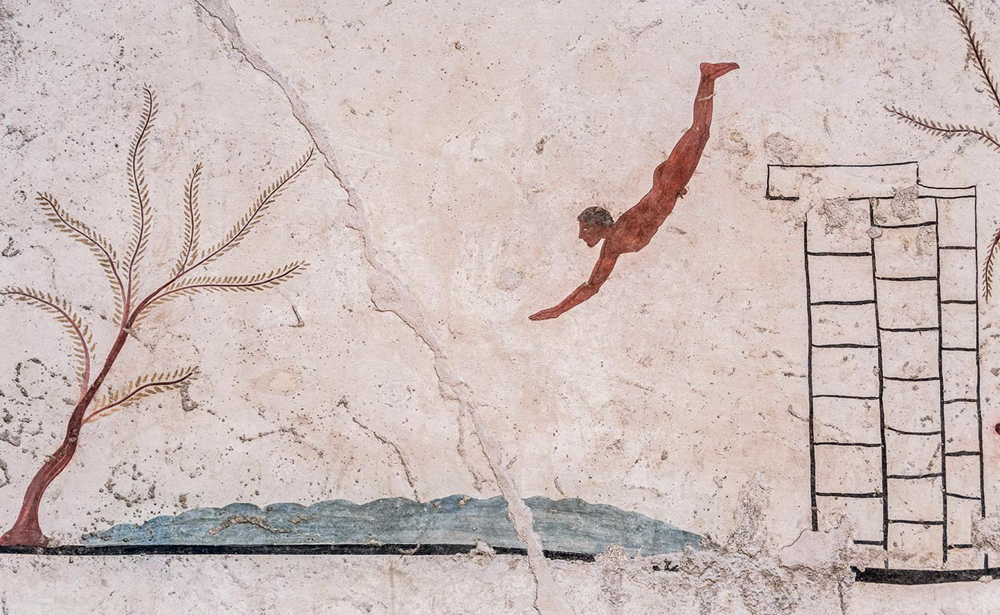
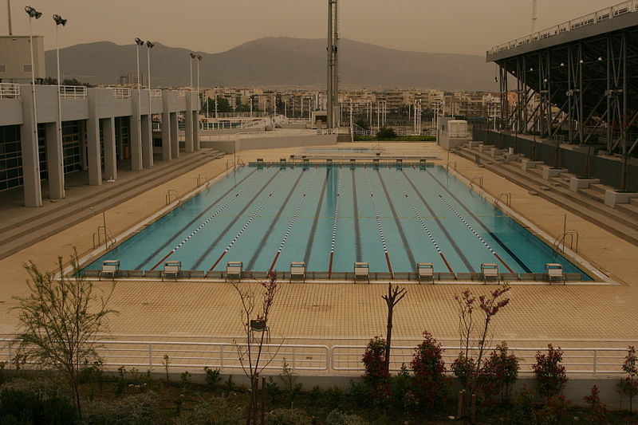

El origen de la natación se remonta a las más antiguas civilizaciones. El dominio del agua forma parte de la adaptación humana desde que los primeros homínidos se transformaron en bípedos y dominaran la superficie terrestre.
Entre los egipcios el arte de nadar era uno de los aspectos más elementales de la educación, así como el conocimiento de los beneficios terapéuticos del agua. En la antigua Grecia como en Roma se nadaba como parte del entrenamiento militar incluso el saber nadar proporcionaba una cierta distinción social ya que cuando se quería llamar inculto o analfabeto a alguien se le decía que "no sabe ni nadar ni leer".
Se tienen indicios de que fueron los japoneses quienes primero celebraron pruebas anuales de natación en sentido competitivo en tiempos del emperador Sugiu en el año 38 antes de cristo.
Los fenicios grandes navegantes y comerciantes formaban equipos de nadadores para sus viajes en el caso de naufragios con el fin de rescatar mercancías y pasajeros. Estos equipos también tenían la función de mantener libre de obstáculos los accesos portuarios para permitir la entrada de los barcos a los puertos.
Los egipcios, etruscos, romanos y griegos nos han dejado una buena prueba de lo que significaba para ellos el agua en diversas construcciones de piscinas artificiales. Sin embargo el auge de esta actividad física decayó en la edad media particularmente en europa cuando introducirse en el agua era relacionado con las enfermedades epidémicas que entonces azotaban. Pero esto cambió a partir del siglo XIX y desde entonces la natación se ha considerado una de las actividades físicas más completas, además de servir como terapia y método de supervivencia.

Este fresco, de circa 470 a. C., adorna 'La tumba del nadador', en el sur de Italia.
Foto tomadada de ABC
En la era moderna la natación de competición se instituyó en Gran Bretaña a finales del siglo XVIII. La primera organización de este tipo fue la National Swimming Society fundada en Londres en 1837. En 1869 se creó la Metropolitan Swimming Clubs Association que después se convirtió en la Amateur Swimming Association (ASA).
Hacia finales de siglo la natación de competición se estaba estableciendo también en Australia y Nueva Zelanda y varios países europeos habían creado ya federaciones nacionales. En los Estados Unidos los clubs de aficionados empezaron a celebrar competiciones en la década de 1870.
A pesar de que en la antigua Grecia la natación ya se practicaba hecho que quedó reflejado en escritos como la Iliada o La Odisea además de en multitud de utensilios de barro este deporte nunca formó parte de los juegos olímpicos antiguos. Sin embargo, la natación sí estuvo presente en los primeros juegos olímpicos modernos de Atenas de 1896 y desde entonces siempre ha estado incluida en el programa olímpico.
En 1908 se crea en Londres la Federación Internacional de Natación (FINA) con una representación de ocho federaciones nacionales: Alemania, Bélgica, Finlandia, Hungría, Francia, Dinamarca, Reino Unido y Suecia. Su función es la de regular las normas de la natación a nivel competitivo así como la de organizar periódicamente eventos y competiciones de natación. Las modalidades que regula la FINA son la natación, los saltos, la natación sincronizada, el waterpolo y la natación en aguas abiertas.
La competiciones femeninas de natación se incluyeron por primera vez en los juegos olímpicos de 1912 y la primera aparición de la natación sincronizada en los mismos fue en Los Ángeles 1984.
Las dimensiones de la piscina olímpica son de 21 m de ancho por 50 m de largo con una profundidad de 1'80 m y se divide en ocho carriles de 2,5 m dejando a cada uno de los lados 0,5 m para evitar las molestias producidas por el oleaje de los nadadores. La temperatura del agua no puede ser inferior a 24º.

Los nadadores más rápidos ocupan las calles centrales mientras que los más lentos nadan en las calles laterales. En las pruebas de estilo libre o crol, braza o pecho y mariposa los nadadores comienzan saltando desde una plataforma en la prueba de espalda empiezan en el agua. Después de la orden de preparados la carrera se inicia mediante un disparo.
{kind=link}
En cuanto a las categorías se distinguen cinco con sus correspondientes modalidades:
Natación:
- Libre: 50, 100, 200, 400, 800 y 1.500 metros individual; 4 x 100 y 4x200 metros relevos.
- Espalda: 50, 100, 200 metros individual.
- Braza: 50, 100, 200 metros individual.
- Mariposa: 50, 100, 200 metros individual.
- Estilos: 200 y 400 metros individual y 4x100 metros relevos.
Saltos:
- Trampolín: 1 y 3 metros individual, 3 metros sincronizado.
- Plataforma: 10 metros individual y 10 metros sincronizado.
Waterpolo:
- Por eliminatorias hasta llegar a las finales.
Natación artística:
- Solo.
- Dúo.
- Equipo.
- Rutina libre combinada.
Aguas abiertas:
- 5, 10 y 25 Km, ésta última disciplina desde los juegos olímpicos de Pekín 2008.